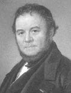

(1783 – 1842)

"Kırmızı ve Siyah" ve "Parma Manastırı" romanlarını yazan ve bu romanlarıyla edebiyat tarihine damgasını vuran Stendhal, gezmekle geçen uzun yıllarının deneyimlerini aktardı okurlarına. Romanları dışında "gezi yazısı" türünün de bugün anladığımız biçime bürünmesinde büyük katkı sağladı.
Yazarlık kariyerinde "Stendhal" adını kullanan Fransız yazar Marie-Henri Beyle, 23 Ocak 1783 tarihinde, Grenoble'da burjuva bir ailenin çocuğu olarak dünyaya geldi. Babası avukat Cherubin Beyle, annesi Hanriette Gagnon'dur. Çok sevdiği annesi 1790 yılında, Stendhal henüz yedi yaşındayken öldü. Stendhal, disiplinli ve muhafazakar kimseler olan teyzesinin ve babasının etkisi altında büyüdü.
1796'da Grenoble'da bir okula girdiyse de 30 Ekim 1799'da askeri okulun giriş sınavına katılmak için Paris'teki Savaş Bakanlığı'na gitti. Ertesi yıl ağır süvari birliğinde teğmen olarak İtalya'ya gitti. Bu seyahati Domenico Cimarosa ve Gioachino Rossini'nin müziğini ve Vittorio Alfieri'nin eserlerini tanıması için bir fırsat oldu.
1801'de ise Napoléon Bonaparte ordusunda görev alarak İtalya seferine çıktı. Bu sefer sırasında bir komutanın asistanı olarak Brescia'da üç ay kaldı ve bu sırada soylu ailelerin evlerinde bulundu. Bu sürenin onun hayatında ne kadar önemli bir yer tuttuğu, sonradan yayınlanan günlüklerinden anlaşılmaktadır. Yine bu zamanlarda yerel dergilerin yazarlarıyla tanışıp Romantik edebiyatı öğrendi.
1802'de bu bölgeden ayrılarak Almanya, Avusturya ve Rusya'da bazı askeri görevlerde bulundu, ama asla savaşa katılmadı. Aynı yıl, hayatı boyunca âşık olduğu onlarca kadından ilki olan Madame Rebuffel'in peşinden Marsilya'ya gitti. Orada ticarete atıldıysa da başarılı olamadı. Bu ve bunu takip eden olayların ve yılların, Kırmızı ve Siyah romanının baş kahramanı Julien Sorel'in karakterinin detaylarının çizilmesine büyük katkı sağladığı düşünülmektedir.
1812'de Napoléon ile birlikte Rusya seferine katıldı ve Moskova'nın baştan sona yanışına şahit oldu. Napoléon'un büyük ordusundan sağ kalmayı başaran az sayıdaki askerden olan Stendhal tuttuğu notların önemli bir kısmını, ordu Rusya'dan geri çekilirken kaybetti. Ayrıca o zamana kadar yüzlerce takma isim kullanan yazar Stendhal ismini bu sıralarda seçmiştir.
Stendhal 1814'te Napoléon'un düşüşünden sonra Milano'ya yerleşti ve burada da Angéla Pietragrua'ya âşık oldu. Ertesi yıl Parma'yı ziyaret etti ve bu gezisi üçüncü romanı olan Parma Manastırı'na esin kaynağı oldu. 1817'de ise İtalya'daki izlenimlerini anlatan ve İtalya'ya olan hayranlığının simgesine dönüşen Roma, Napoli ve Floransa kitabını yazdı.
1818'de Napoléon'un Hayatı'nı yazmaya başladı ve bu sırada da mutsuz bir aşk yaşayacağı Mathilde Dembowski ile tanıştı. 1821'de ise yasadışı bir İtalyan örgütüne üye olduğu suçlamasıyla Milano'dan uzaklaştırılması üzerine Stendhal, Batı Avrupa'yı dolaşmaya başladı. Bu yolculuklar sırasındaki deneyimleri, düşünceleri ve hisleri sonradan yazacağı romanların ana şeklini oluşturmuştur.
1827'de ilk romanı Armance'ı (imzasız olarak), üç yıl sonra da başyapıtlarından biri olan Kırmızı ve Siyah'ı yayımladı. 1831'de Trieste'ye giderek bir süre konsolosluk yaptı.
1839'da Parma Manastırı'nı yayımladıktan sonra, gençliğinde yaptığı İtalya seyahatlerinden birinde kaptığı frengi hastalığı etkilerini göstermeye başladı. 1841'de geçici bir felce uğradı ve daha sonra benzer birçok sıkıntı daha yaşadı. Yağmurlu bir mart günü Paris sokaklarında yürürken bayılıp kaldırım kenarına yığılmasından birkaç saat sonra, 1842 yılının 22 Mart'ı 23 Mart'a bağlayan gecesinde vefat etti ve Montmarte Mezarlığı'na defnedildi.
Seçme Romanları: Armance (1827), Le Rouge et le Noir (1830 – Kırmızı ve Siyah, Bordo Siyah Yayınları, 2005), Lucien Leuwen (tamamlanmamış kitap, 1835'te yazıldı, 1894'te yayımlandı), La Chartreuse de Parme (1839 – Parma Manastırı, Oda Yayınları, 1999), Lamiel (tamamlanmamış kitap, 1839-1842 yıllarında yazıldı, 1889'da yayımlandı)